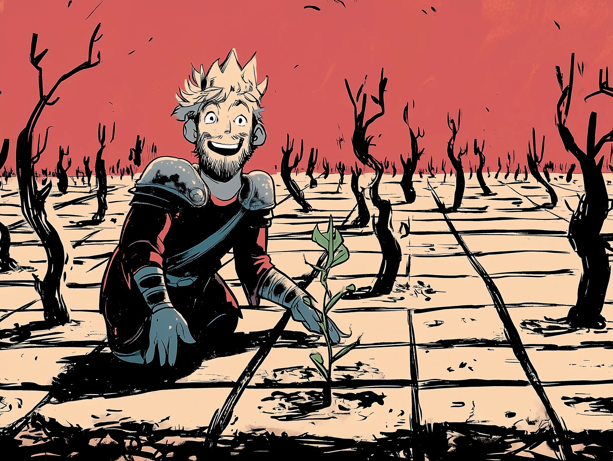

- When I was fleshing out my co-thinking offering (website), I spent ~2 days having Claude interview me to extract all the tacit knowledge out of my head1
- Claude claimed to have identified 50 tacit knowledge things, but I think some of them are dubious, so I’m gonna copy-paste that list of 50 here and polish it to what I actually endorse as the prerequisites that I have collected over the years2
Deep care
TLDR; I’ve cared about this stuff deeply for 10 years3
- The really really exciting thing about this whole thing is that historically it has been very easy for me to think “oh man, I did the wrong undergraduate degree (biomedical sciences), I did a Masters in bioengineering and that also felt wrong in retrospect, I don't have any skills, I didn’t get a useful technical education” etc (see e.g. Re wanting to learn how to think, 2026-03-04
- And then realising (after doing a 2-week co-thinking sprint with Ediya and it going really well and got her unblocked on something she’d bee#blocked on for 3 years) — oh shit, I’ve been working on this stuff gradually for 10 years!!!
- This discovering that I actually have gathered a unique overlapping set of skills in a pure revealed preferences way. “What do you do regardless of if you’re paid to do it or not, what has persisted over the years, over the pivots”, etc (see e.g. First principles 2 - revealed preferences)
The power of containers
- I’ve pivoted a huge amount in my life
- In fact, I made this image recently when I was mapping my failure modes, to show my failure mode of “super excited to show off/talk about my current new obsession/exciting thread, without realising this pattern of abandoning things after a few weeks”. This excited figure showing off a newly planted sapling without seeing the huge mass of dead-because-I-moved-on-from-them saplings in the background:

- Lol
- So it does feel very clear to me than a clean container held by another person is very powerful. It’s really hard to avoid pivoting solo IMO, especially with the whole aversion thing (My model of coaching)
Claude-mapped stuff that I need to clean up4
Organisation
- Daily brain dump → atomic notes → triage → visualisations — the meta-stack
Hermeneutic spiral
- Map the whole system before operating on any part — coherence therapy principle
- Get clarity first; impose structure only after — then it lands
- Continuity as structural differentiator — systematic vs organic coaching
Understanding stuckness
- The symptom isn’t the lever — find the upstream crux
- Many stuck things are false binaries — find the third option the binary hid
- Map first, then find the wisdom in both — IFS over Socratic
Regulated nervous system/regulated posture
- Two nervous systems co-regulate — the container is the active ingredient
- VIEW framework (Vulnerability, Impartiality, Empathy, Wonder — Joe Hudson)
Async work
- Sync and async — the two modes of the practice
- The artifact set — four types, mostly async
- Insight pumps — one-pagers in a different register
Socratic
- Scaffolding people along from their own “A” ceiling, “A” frontier, rather than giving them “U”s
- B-floor refactoring
- A true grokking of A/B/U is a key prerequisite, add this! Truly understanding that I can’t just install Us, that people have false Bs, that offering a possible A will provide info re: where they’re at (Jed McKenna’s “flare” thing, re: where you are in the thorns)
Insights
- Making the implicit explicit — subject to object (Kegan / DFW)
- A/B/U — the structural theory of the Socratic seat
- Why a friend can’t do this — Us as advice vs Us as probes
Rationalist + Post-rationalist
- Rationality + emotional intelligence — the rat + post-rat fusion
Post-rationalist thought
- Coherence therapy — beliefs are coherent and adaptive; the first-principle vs inconsistent-fear diagnostic
- Kensho changed my nervous system — I’ve been there
- Nervous system co-regulation — the two-person system has more capacity than one
- Ugh fields and the unthinkable thought — the deepest mechanism for why dialogue is necessary
- The four levers of stuckness — aversion, craving, aliveness, blindness
- Craving and the pivot trap — lived experience and the Arete fix
- VIEW Vulnerability — epistemic honesty and interviewer map hygiene
- VIEW Empathy — compassion creates conditions for somatic work
- Felt sense (not narrative) is what produces therapy progress (Gendlin)
- Scrunching / unscrunching — my own terms for Kegan subject/object
- The three Advaita layers — abstraction, felt sense, Brahman
- Kensho as the substrate for VIEW — not technique but ground
Rationalist thought
- Epistemics
- Probabilistic thinking
- Bayesian updating (similar to post-rationalist Lefkoe Belief Updating)
Footnotes
-
Re: the term “tacit knowledge”, I’m not doing the strict Polanyi thing here, here’s Claude:
The strict Polanyi sense vs. the looser everyday sense:
In the strict philosophical sense, “tacit knowledge” is the bike-riding case — knowledge that genuinely cannot be articulated, because it’s embodied or procedural in a way that resists language.
But in knowledge management, organizational learning, and expertise studies — which is where the term gets used most in practice — “tacit knowledge” has come to mean something broader: knowledge that an expert has but doesn’t readily produce when asked. This includes:
- Genuinely ineffable stuff (strict Polanyi).
- Knowledge that’s articulable but not consciously accessible without prompting — you know it, but you don’t know you know it until something draws it out.
- Knowledge that’s articulable but invisible to the expert because it’s been so internalized they don’t notice they’re using it (“the curse of expertise” / “the curse of knowledge”).
- Knowledge that requires the right question to surface — sitting in memory but not retrievable via “tell me everything you know about X.”
What you did with Claude Code — interview-based extraction — was working primarily on categories 2, 3, and 4, with maybe some 1 mixed in. And in the knowledge-management literature, all of that often gets called “tacit knowledge elicitation,” even though strictly only category 1 is tacit in the Polanyi sense. ↩
-
Co-thinking and revealed preferences covers this “I’ve been doing this for 10 years!!” thing ↩
-
And by “this stuff” I mean, learning/growing
E.g., Ethan’s thing from his reference (Ethan’s reference) of “for instance, he’s very intentional about his own productivity and figuring out his personal failure modes. Because of this, he’s someone I expect to see growing — by redefining himself and his capabilities— more frequently than others. Just like he experimented with software systems for Alvea to use, Alex seems to take an experimental approach to his own process and approach to work. Seeing what fits, and iterating on that. ” ↩ -
But this will do for now, yolo ↩